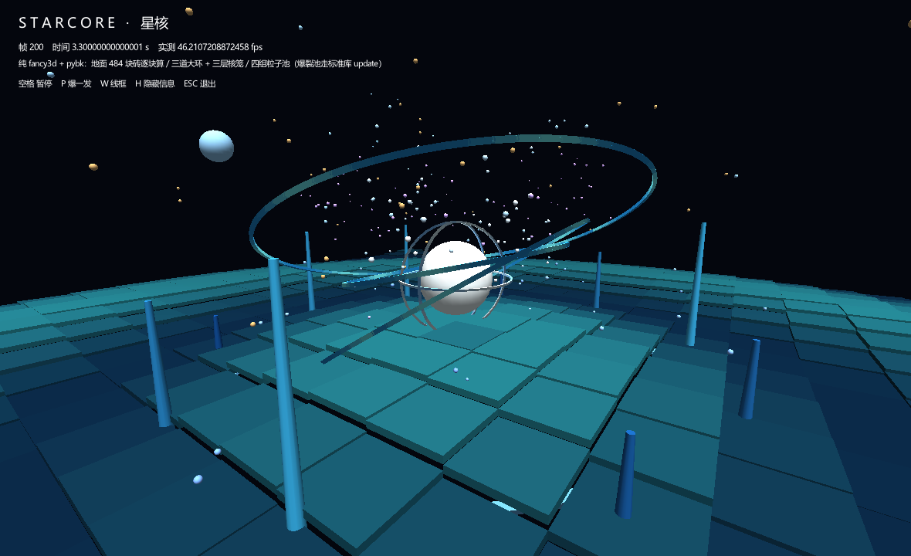
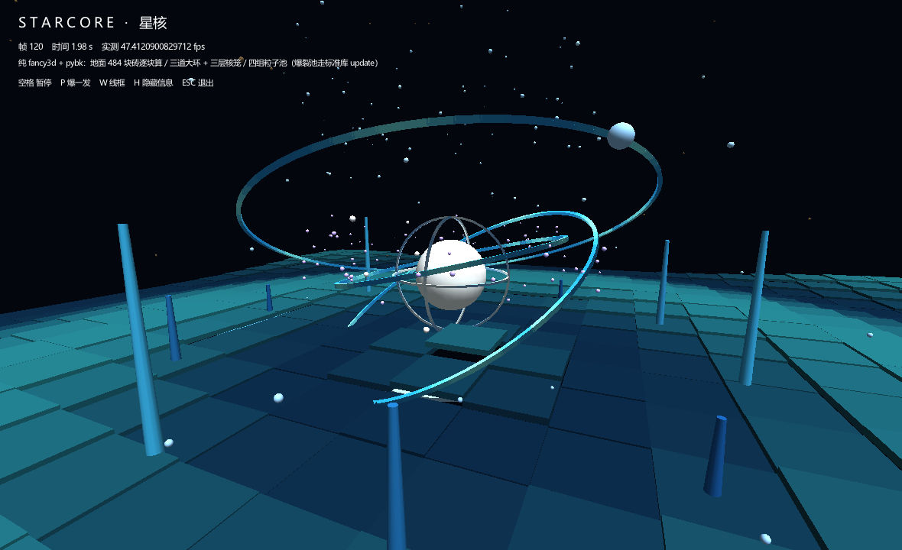
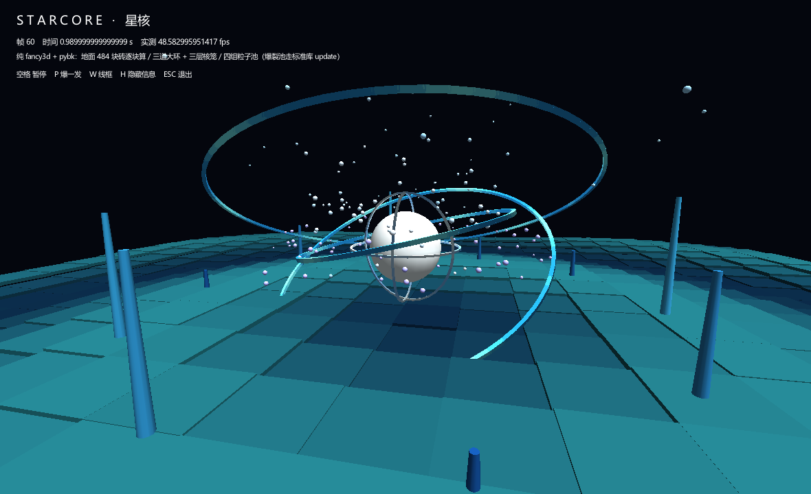
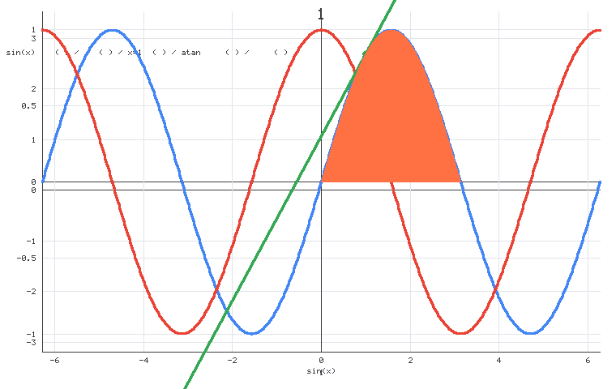

PYbook
版本 1.0.9
中文编程入门语言
写中文，编译成真正的 C，跑出 60 FPS 的游戏
1.0.9 新到：张量升格一等类型 · 知命内存进化（帧对齐 / GC 可观测 / 确定性工具）· 中英 API 别名 · 自研正则引擎 · 虚拟机后端加速 +10% ·
工具链 LookAround（随包内置）：改代码自动记开发日志、报错翻中文人话、一键出团队协作报告 ·
GC 分代 + 增量（@5/@6 不再崩、提速 42 倍）·
Smokeroor 安全体检 ·
桌面 GUI · 3D OpenGL 着色器 · 正则 re · 15 个前缀库
⬇ 下载完整包
pybook-1.0.9.zip · 37.9 MB · 解压即用（只需 Python 3.10+ 和 PATH 上的 gcc）
LookAround 开发日志循环
Smokeroor 安全体检
GC 分代 + 增量
编译缓存 6.5 倍
3D 星核特效示例
无头出图（批量截图）
桌面 GUI 窗口程序
15 个前缀库
2D 游戏 SDL2
3D OpenGL 着色器
网页实时模式
神经网络 torchbk
网络 TCP
音频
宏 macro（编译期内联）
类系统 class（继承/多态/静态）
张量一等类型 tensor
VM 后端加速
知命内存 mode7
中英 API 别名
正则 re
GPU sgemm
软类型 + 测试框架
# 你的第一个 PYbook 程序
GOING:{
vg.名字 = "世界"
ns.show(你好，$名字！)
}STOP
# 安全体检（1.0.5.2）：一行看懂变量现在什么状态
GOING:{
vg.a = 42
ns.show(状态 = $(smoke.check(a))) # [OK] / [DELETED] / [DANGLING]
ns.show(类型 = $(smoke.type(a))) # INT / STR / LIST ...
vg.h = smoke.heap()
ns.show(体检 = $h) # [错误数, 悬垂, 根数, 模式, 字节, 单元]
}STOP
跑 python smokeroor.py 一条命令体检全部安全机制（红绿灯报告）
# 工具链 LookAround（1.0.6 随包内置）：开发日志自动记下来
cd 你的项目目录
pybktl lookaround # 开启：后台监控文件改动 + 记录每次 run/build/check/smoke
pybktl check 程序.pybk # 失败？报错被翻成中文人话，落进 lookaround.md
pybktl todo add 把报错翻成人话
pybktl check 程序.pybk --todo 1 # 这次运行关联到某条待办
pybktl lookaround report # 一键出团队协作报告
# 本版新东西：粒子库的物理参数化了 —— 重力 / 阻力 / 速度随你调
ON 3D_highway
引用("fancy3d")
GOING:{
hw.open(480, 320, "粒子喷泉")
hw.clearcolor(8, 10, 22)
hw.fog(30.0, 70.0)
vg.池 = []
fancy3d_init(池, 200)
vg.帧 = 0
rm.aging.while(帧 >= 900 or hw.end()) {
hw.camera(0.0, 5.0, 20.0, 0.0, 0.0 - 0.2)
hw.light(0.4, 0.9, 0.4, 1.0)
hw.box(0.0 - 4.0, 0.0 - 0.3, 0.0 - 4.0, 8.0, 0.3, 8.0, 32, 44, 72)
if(帧 % 3 == 0) {
fancy3d_burst(池, 0.0, 0.4, 0.0, 4, 120, 205, 255, 1.6) # 末参 = 初速倍率
}
vg.丢 = fancy3d_update(池, 0.02, 0.995) # 重力 0.02 + 每帧 0.5% 空气阻力
帧 = 帧 + 1
hw.frame()
}
}STOP
# 本版新东西（1.0.8）：图表库接 sym.* —— 导函数 / 切线 / 渐近线 / 定积分图形化
GOING:{
vg.板 = 图.画布(640, 480)
图.轴(板, -6.283, 6.283, -3, 3, 1, 1, "sin(x) 与它的导函数 cos(x)")
图.曲线(板, "sin(x)", -6.283, 6.283, "蓝", 2) # 原函数
图.导数(板, "sin(x)", "x", "红", 2) # 解析求导 → cos(x)
图.切线(板, "sin(x)", "x", 1.0, "绿") # x=1 处的切线（斜率=cos1）
图.渐近线(板, "tan(x)", "x", "灰") # 探 ±∞ 极限 → y=±π/2
图.面积(板, "sin(x)", "x", 0, 3.14159, "橙") # 定积分 ∫₀^π sin(x)dx = 2
图.存(板, "示例_sym.png")
}STOP
# 张量一等类型（1.0.9）：矩阵直接当一等公民，C 与 VM 后端逐字一致
GOING:{
vg.M = tensor.from([[1,2,3],[4,5,6],[7,8,9]])
vg.a = M[1,2]
ns.show($a) # → 6
vg.N = M[0:2,1:3]
ns.show($N)
vg.P = M ** M
ns.show($P)
}STOP




「星核特效」是随包附带的 3D 示例（星核特效/星核特效.pybk，双击 星核特效.cmd 直接出窗口）：
地面 484 块砖逐块按高度场算、三道各 72 段的能量环挂在自转父节点上、中间一颗亮核套着三层互相垂直的力场笼。
它没用任何着色器、贴图和第三方库 —— 粒子是标准库 fancy3d、几何是 hw.box 一块块拼的，
运动学全是 PYbook 自己积分出来的。这三张图也是引擎的无头出图功能自动截的
「图表库接 sym.*」（1.0.8 新特性）用无头出图截的第四张图：sin(x) 的原函数(蓝)、
解析求导得到的导函数(红)、x=1 处的切线(绿)、atan(x) 的水平渐近线(灰)、以及定积分面积(橙)——
全部由图库自带求值器与 pybook_sym.c 的解析核心层接通后一次性画出
迭代日志 —— 每个版本加了什么
1.0.9 2026-10-25 · 语言能力大补：张量一等类型 + 知命内存进化 + 中英 API 别名 + 正则 + 虚拟机加速
- 张量一等类型：新 VM 对象
RtTensor，T[i,j] 索引 / T[a:b,c:d] 切片 / A**B 矩阵乘，C 与 VM 后端逐字一致（113/113 无回归）
- 知命内存（mode7）进化：帧边界对齐（GC 暂停只发生在帧间）+
smoke.gc_stats 可观测 + --determinism-check 同种子两遍比对 stdout 与 GC 轨迹 + 逃逸分析自动喂相位；rt_selftest @7/B(4)+@7/C(11) 全过，全量 188 通过
- 中英 API 别名：
LIB_ALIASES 386 条自动生成 + sym.* 14 条显式，中文名 / 英文名都可调，生成 C 逐字节不变（零回归）
- 正则模块 re：零依赖自研 NFA 引擎（
re.匹配/查找/替换/有效/分组），MinGW 无 regex.h 故自研，引擎单测 39/39
- 虚拟机后端加速 +10%：主派发改 threaded dispatch（帧指针存活）；补三元 / 列表推导 / 编译期拒绝 C-only 库；
tests 121/121 无回归
- 其余：GPU sgemm 三 kernel 按 N 路由、软类型 + 测试框架、报错三段式全覆盖、大项目管理 Phase 1、errorstopped 三档、VM JIT 开关
1.0.8 2026-10-18 · 图表库接 sym.*（求导 / 切线 / 渐近线 / 定积分图形化）
- 图表库接 sym.*：图库自带求值器与
pybook_sym.c 的解析求导 / 积分 / 极限核心层打通，新增 4 个图元——图.导数（解析求导）、图.切线（指定点切线）、图.渐近线（探 ±∞ 极限）、图.面积（定积分，积不出退自适应辛普森）
- 顺手逮到 5 个真 bug：
atan2/log10/log2 永远调不到、√x 安静给错数、渐近线两侧同值报两次、同一错误两套措辞、前端 scan_raw 把字符串里的括号算进配平（影响 ns.show/big/mid/web.*）
- 三个设计选择：求值器按表达式分流不换引擎、变量名不用另外传、四个新图元绝不自己定值域（只在已有坐标系内作画，没坐标系先报错）
- 全量验证：图表库接入验证 C/VM 各 46/46、负例 16/16、反向验证 9/9、图表库回归 C/VM 各 93/93、Smokeroor 8/8 与基线一致、
gcc -Wall -Wextra 0 错 0 警告
1.0.7 2026-10-08 · 宏 / 类系统 / 张量一等类型 / VM 后端加速
- 宏（编译期内联）：
宏 名(参数){...} 在编译期展开，专治「小操作反复写、调用又有开销」。只当语句用、不支持递归
- 类系统补齐三大特性：继承 + 多态（
lb.狗 : 动物，运行时沿继承链分发）、构造形参（lb.点(x,y){...} 位置实参 + 自动注入 构造）、静态成员 / 类方法（静 vg.字段 / 静 func 方法）
- 张量一等类型（真·VM 对象，不是二维列表语法糖）：新对象
RtTensor 挂在 OBJ 盒标签上；A ** B 矩阵乘（多线程）、T[i,j] 多维索引、T[a:b,c:d] 二维切片；tensor.from/to_list/get/set/slice 全套 API
- VM 后端加速：解释器改 threaded dispatch（纯解释、无 JIT）；实测 2000 万次单循环 C 端 1837ms vs VM 2332ms（约 1.27×），小负载甚至更快
- 底层延续 1.0.6：工具链 LookAround、GC 分代 + 增量、Smokeroor 安全体检、编译缓存 6.5 倍
1.0.6 2026-10-05 · 工具链 LookAround（随包内置）+ 多项引擎修复
- 随包内置工具链 LookAround：
pybktl lookaround 在任意项目目录后台帮你记开发日志——文件改动 diff、每次 check/build/run/smoke 的退出码与报错、gcc/Python 报错翻成中文人话并聚合去重，自动写进 lookaround.md
- 文件夹级待办 + 团队协作报告：
pybktl todo add/done/rm 管理中途待办，check --todo N 把运行关联到待办；pybktl lookaround report 一键汇总「运行数 / 成功失败比 / 错误分类 / 待办进度」
- 可移植、零硬编码：不写死任何路径，靠从工具自身位置向上找
pybk_main.py 定位编译器，下载解压即得
- FFI 前缀 c.* → ffi.*：避免撞上「拿 c 当变量名」的老写法；报错三段式带「为什么 / 怎么改」；rm.around 修复（之前循环体被静默丢弃）
- 3D 增强：HUD 永远和窗口对齐、鼠标三层锁死、
hw.objh 地形高度查询、hw.rdown/rhit 右键、hw.wininfo/hw.resize；hw.obj* 支持 .obj 模型（含 .mtl 材质）
- 21 条弱项逐条实测：澄清「无并发无并行」（16 工人线程池，默认 4.89×）、「性能靠 SDL」（300×300 矩阵乘 23× 于 CPython 且零依赖）；修掉 3 个示例漂移
- 底层延续 1.0.5.2：GC 分代 + 增量（@5/@6 不再崩、提速 42 倍）、Smokeroor 安全体检、编译缓存 6.5 倍
1.0.5.2 2026-09-29 · 安全加固版：GC 修复 + Smokeroor + 编译缓存
- 修复 @5/@6 一跑就崩（访问违例
0xC0000005）：GC 的 sweep 自己就逐个回收垃圾，却又递归释放子对象 —— 子对象若排在父前面已被 free 过，父再释放就踩悬空指针。原来 @normal 141ms 跑完的负载，@5/@6 必崩；现在正常
- 修复 @6 慢 100 倍：minor GC 会顺着老年代往下摸整个可达图，退化成半个全堆标记；而且 major GC 从不自动跑（增量是死代码）。加了代际隔离 + 老年代超 2MB 自动点火增量标记，9860ms → 234ms（提速 42 倍），@6 相对 @normal 的开销从 70 倍降到 1.66 倍
- 补上增量标记的写屏障（黑分配 + 删除屏障 + 插入屏障）：以前增量标记期间改指针会漏标、被当垃圾收走。实测 60000 对象 + 400 轮高频改引用，校验 0 错
- 新增 Smokeroor 安全体检：
python smokeroor.py 一条命令出红绿灯报告。配 smoke.* 14 个检查函数（零成本），smoke.check(v) 一行看懂变量是 [OK] / [DELETED] / [DANGLING]
- 期望驱动 + 错误指纹库：新错误来了只加声明不改源码（
--learn 自动生成期望）；见过的错秒认（标 [已知]）。不符自动重试，还不符就红 + 明确 diff + 基线揪出新增失败
- 编译提速 6.5 倍：源码 / 引用库 / 编译器 / 运行时都没变就直接跑上次的 exe（冷 9.95 秒 → 热 1.52 秒）。改源码或改运行时自动失效
- 修复 @self 悬垂指针：手动删除后共享别名访问原来是「后果自负」（野指针），现在报
用已删除变量 干净退出 —— 这是唯一能让 PYbook 段错误的地方
- 新增
te.chr(码点)：PYbook 字符串不支持转义，这是产生换行 / 回车的唯一出口（te.chr(10) 换行、te.chr(13) 回车）。顺带解锁了 HTTP（CRLF 能发了）
1.0.5.1 2026-09-27 · 1.0.5 修正版：粒子库可调 + 星核特效
- 粒子库力学参数化：fancy3d / fancy2d 的物理原来是写死的（固定重力 + 直线匀速），想做上升的烟 / 公转的涡 / 落地反弹的尘，只能整个绕开它自己积分。现在重力 / 阻力 / 速度都是可选参数，默认值逐位等于旧行为，老代码一行不用改
- 粒子级参数：一池多种物理 —— 参数还能下沉到粒子自己身上（p.重力 / p.阻力 / p.速度），新增 fancy3d_evolve / fancy2d_evolve：一次调用，同一个池里往上飘的烟和往下砸的石头各走各的。以前一池只能一种物理，想要多种就得建多个池
- 新增 fancy3d_draw（只画不演化）：物理完全自己写完之后，仍可借它那套「按生命比例衰减大小与颜色」的绘制，不必自己重复写 hw.sphere
- 引擎修复：hw.fov / hw.near / mt.clamp / mt.lerp / mu.* 补上 C 名映射 —— 这些名字在参数个数表里有、C 名映射表里漏了，写出来不是报「没这个 API」，而是编译器自己 KeyError 崩掉，报错跟你的代码毫无关系。共补 12 条
- 引擎新能力：无头出图 —— 设一个环境变量（PYBOOK_SHOT_DIR）就能让 3D 程序每 N 帧自动存一张图，不设则零开销。3D 画面以前只有真窗口能看，自动化验收只能靠「跑完没崩」猜 —— 上面那三张截图就是它截的
- 新示例「星核特效」：382 行、纯 fancy3d + pybk，零着色器零贴图，双击 星核特效.cmd 直接出窗口
1.0.5 2026-09-27 · 桌面 GUI + 三个引擎修复
- 桌面 GUI：ui.* 立即模式界面库（11 个 API）——按钮 / 单行输入（支持中文输入法）/ 滑条 / 勾选框 / 标签，横排竖排容器 + 间距 + id 绑定。SDL2 自绘、零新依赖，没有控件对象也没有事件回调，每帧重声明一遍，函数直接返回交互结果——写三行就是一个表单
- 语言修复：用户函数现在能裸调用当语句（硬伤）——原来 干活() 这种写法会被编译器拒掉（"不是合法的语句开头"），只能绕成 vg.丢弃 = 干活()，procedural 写法全废。是拿一份现成的模块库做端到端验收时暴露的
- js.dump 支持类实例——之前对 lb. 对象调用会报莫名的"需要整数"，于是存档库一存玩家对象就崩；现在按属性名平铺成 JSON 对象，存读往返可用
- ns.show() 空参输出空行（与 print() 一致），并修掉错误提示里重复的行号前缀（"第 7 行：第 7 行：…"）
- 验收方式换了：不再只看"没崩"——拿 7 个模块的现成库真编译真跑（26 项断言全绿）+ 开窗口跑满 30 帧的冒烟测试 + C 探针出图比对
1.0.4 2026-09-25 · 3D 可编程管线 + Godot 级编译器
- 3D 上真 OpenGL 着色器：新增 hw.preset（6 个内置着色器：朗伯 / 卡通 / 边缘光 / 棋盘 / 法线 / 自发光）、hw.shader（写自己的 GLSL）、hw.shaderuse（一帧里中途切换）、hw.uni（设 uniform）。用 GLSL 120 吃固定管线内建量，1400 行几何代码一行没改成 VBO；实测驱动是 OpenGL 4.6 兼容 profile
- 3D 补全：球 / 圆柱 / 圆锥 / 线段 / 真方向光 / 视场角与近裁剪面可调 / hw.ortho 正交投影（俯视图、等距对齐视图，不再只有透视） / 贴图（png·jpg·bmp·tga + 透明裁剪 + UV 平铺）/ 父子层级 hw.push·hw.pop（最多 20 层，转桌子桌上的东西跟着转）
- 编译器提速：rm.around 热点标量化 + 字典哈希索引——速度对决从"比 Python 慢 80 倍"追到 1.68s vs 0.62s
- 新标准库：js.（JSON 解析/序列化）、csv.（RFC4180）、bs.（位运算 15 个）、mm. MyMove（列表即像素画，手写 PNG 编码器零依赖，像素级比对全对）、音乐库扩展（音.音 / 音.奏 / 音.谱——列表做音乐，直接落 WAV）
- VM 后端：新增字典字面量（DICT_NEW / DICT_SET）与标准库调用（CALL_LIB），VM 模式不再只能跑纯语言子集
- 语言/工具：查(条件,"名字") 测试断言 + --test 退出码、引用("模块") 模块合类、web.块 组件复用 / web.页 多页、多核加速（大矩阵自动并行 2.64×）、积木编辑器
1.0.3 2026-09-19 · 新版 Web + torchpybk
- torchpybk 分类补全：softmax / 交叉熵 / argmax、SGD / Adam 优化器、shuffle / onehot / batch 数据原语——MNIST 式分类全链路可跑，示例网络训练到 100% 准确率
- Web 交互全套：输入框 / 按钮控件（textbox·button）、读取表达（web.text·down·click·mx·my）、音频 / 标题 / 样式 / 本地存储 / 等待 / 翻转贴图
- 修复三处：web.audio.stop 与 web.waitsec 一用即崩、mp.mat_scale 参数个数错误
- 文档：PYBOOK_AI.md 新增神经网络 / math+ / numpybk / Web / 3D 五章（示例全部过 --check）
1.0.2 2026-09-19 · 编辑器 / IDE / AI 规范
- 场景编辑器 editor.exe、PYbookIDE.exe（写代码+编译+运行一体）
- AI 编程四件套：--check 秒验语法、报错带行号带改法、PYBOOK_AI.md + llms.txt 规范
- 语言升级：字典 / 推导式 / try-catch / onerror / .get·.at / 切片 / 三元 / 插值 / 默认参数
- 网页画布与动画：web.draw、web.帧 / web.播放 / web.实时
- 全部新游戏与四语言开发速度基准
1.0.1 2026-09-13 · 网页模式起步
- 在线《物理引擎实验室》：滑条 / 按钮 / 输入框 + 鼠标交互
- web 段落输出（big / mid / show / img / line / link）+ /magic 修饰
1.0.0 2026-09-13 · 首发
- 中文语法编译到 C：60 FPS SDL2 原生窗口、3D 模块、TCP 网络
- math+（mp）/ numpybk（np）/ torchpybk（tb）三库齐备
- 内置游戏：占点突击、飞船大战、AI 走迷宫、伪 3D 走廊、鼠标勇士、霓虹突袭 等